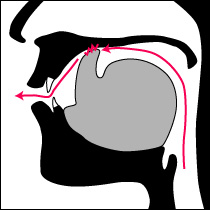
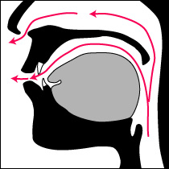

大歓喜トップ >> サンスクリット｜トップ >> 音読のための基礎文法 >> ローマ字表記と発音
ローマ字表記と発音
サンスクリットは、ヨーロッパ人などアルファベットを使う人たちの研究しやすいように、ローマ字化（ローマナイズ）して書かれることも多い。このコーナーでも、インド系文字（デーヴァナーガリ―文字など）を覚えていただく手間を省くために、ローマナイズした表記を使う。そこで以下に、サンスクリット用ローマ字の発音規則を紹介する。
a｜ā｜ai｜au｜b｜bh｜c｜ch｜d｜dh｜ḍ｜ḍh｜e｜g｜gh｜h｜ḥ｜i｜ī ｜j ｜jh ｜k ｜kh ｜l ｜ḷ ｜ɭ ｜ɭh ｜m ｜ṃ ｜n ｜ṇ ｜ñ ｜ṅ ｜o ｜p ｜ph ｜r ｜ṛ ｜ṝ ｜s ｜ṣ ｜ś ｜t ｜th ｜ṭ｜ṭh ｜u ｜ū ｜v ｜y
f, q, w, x, z, の5文字は使われない。
このコーナーで採用している、最も一般的な方式では、f, q, w, x, z, の5文字は原則として出てこない。特にその他どんな方式でも、w, を使うことはないであろう。
c, は[c](チャ行子音)、j, は[ɟ](ヂャ行子音)を表す。
c, は[c](無声硬口蓋破裂音)を表し、日本語ではチャ行子音に聞こえる。英語などと違って、カ行やサ行の発音に使われることはない。c, ひと文字だけで、既にチャ行子音なのであって、ch, と書けば、その帯気音(有気音)である。
また、j, は[ɟ](有声硬口蓋破裂音)を表し、日本語ではヂャ行子音に聞こえる。フランス語のように摩擦音のジャ行子音になったり、ドイツ語のようにヤ行子音になったりすることはない。
これらの音の舌の構えについては、こちらを参照のこと。
g, は[g](ガ行子音)を表す。
g, は、日本語のローマ字と同じく、常に[g]を表し、日本語ではガ行子音に当たる。英語などと違って、ヂャ行子音を表すことはない。
s, は[s](サ行子音)を表す。
s, は、常に[s]を表し、日本語ではサ・スィ・ス・セ・ソの子音に当たる。英語・ドイツ語などと違って、濁って有声音の[z]になることはない。
v, は[v](ヴァ行子音)を表す。位置によって、ワ行子音([ʋ]または[w])となる。
v, は、[v]を表し、ヴァ行の子音に聞こえる摩擦音である。s, の直後など、位置によって、ワ行に聞こえる接近音([ʋ]または[w])となる。
y, は[j](ヤ行子音)を表す。
y, は、[j]を表し、日本語ではヤ行の子音(半母音)に当たる。口を丸めた母音の[y](円唇前舌狭母音)を表すことはない。稀に摩擦が強まって[ʝ](有声硬口蓋摩擦音)に聞こえることがあるくらいの、硬い音。日本語のヤ行よりも、舌の上の隙間を狭目に作る。
例えば、kya, は、日本語の一拍の「キャ」ではない。kra, を言うのと同じだけの時間がかかるという心づもりで、「キヤ」と「ッキャ」の中間くらいに思っていればいいだろう。
a, i, u, e, o, は概ね、ア・イ・ウ・エー・オーである。
但し、a, は日本語のアよりも狭い[ə]で、普通に「ア」を言うとこの音に聞こえない。u, は日本語のウよりも唇を丸めて突き出す。e, と o, は、常に長い音である。英語と違って、a, をエイと読んだり、i, をアイと読んだり、といった変化はない。
舌先を使う音の文字の下に加点で、反舌音を表す。(ṭ, ḍ, ṇ, ṣ,)
舌先を使う音の文字は、下に点を打つことで反舌音(右図のような舌の構え)を表し、何もない普通の書き方では歯音(舌先を上の前歯の裏に付ける)を表す。
反舌音と歯音の区別は、非常に重要な注意事項なので、忘れずに心に留めておくこと。
ṇaなどは、ラ(ra)を言うつもりで舌を動かしながら声を鼻にかけると、上手くいくであろう。
破裂音をあらわす文字 + h で、帯気音(有気音)を表す。
(kh, gh, ch, jh, ṭh, ḍh, th, dh, ph, bh,)
破裂音の文字は、次に h を書くことで帯気音(有気音)を表し、h が続かないときは無気音を表す。
帯気音(有気音)と無気音の区別は、非常に重要な注意事項なので、忘れずに心に留めておくこと。
無気破裂音の直後に h が来た時には、必ず1つの帯気(有気)破裂音になり、例外はない。
英語などの綴りと違って、帯気音(有気音)の綴りが摩擦音化することはない。つまり、th, が[θ]の音になったり、ph,が[f]の音になったりはしない。
ñ は、[ɲ](ニャ行子音)を表す。
n の上にティルデ("~")を乗せた表記で、[ɲ](硬口蓋鼻音)を表す。日本語ではニャ行子音に聞こえる。スペイン語等のエニェ("ñ")の字と同じ。
この音の舌の構えについては、こちらを参照のこと。
文字の上にアクサンテギュ(アクセント記号の一つ)で、口蓋音化を示す。
ś は、[ɕ](シャ行子音)を表す。
s の上にアクサンテギュ("́")を乗せた表記で、[ɕ](硬口蓋無声摩擦音)を表す。日本語の一般的なシャ行子音に近い。ヒャ行子音([ç])を言う位置で摩擦をより強めた音。
サンスクリットでは、śa([ɕə]シャ)・ṣa([ʂə]シァ)・sya([sjə]スャ/スィヤ)の3つは区別される。舌の構え・摩擦の起こる位置が異なる。それぞれ、口蓋音・反舌音・歯音なので、注意すること。加えて、sya は、子音2個＋母音の発音時間をかけるので、他の二つよりも長い。
文字の上に加点で、喉音(軟口蓋音)化を示す。
ṅ は、[ŋ](鼻濁音のガ行の子音)を表す。
n の上に加点(ṅ)で、[ŋ](軟口蓋鼻音)を表す。英語の"-ng"の音。日本語の鼻濁音のガ行子音。
舌先を使わない音の文字の下に加点で、調音点の不定化を表す。(ṃ, ḥ,)
5つの調音点を述べたのは、口の構えの違いが敏感に「音の違い」として認識される発音を、互いに区別するためであった。ところが逆に、口の構えがいろいろと変わり、実際に出る音も違っているのに、言葉の話し手にとっては、それらをまとめて「同じ音」とされる発音も、実はある。日本語で言えば、「ン」と小さい「ッ」が代表的である。日本語の「ン」について、「カンパイ(乾杯)」の「ン」が[m]なのに、「カンドウ(感動)」の「ン」は[n]で、「カンゲキ(感激)」では[ŋ]になる……という話は、わざわざ最後まですることもなかろう。
その「ン」や「ッ」に相当するサンスクリットの発音が、ここで説明する ṃ,と ḥ,である。
右上の図は、時と場合によって、各色の線のように調音点が変わる、というイメージである。
ṃ,と書かれる音はアヌスヴァーラ(anusvāra)と呼ばれ、大元は m, であるものの、条件によって、いろいろな調音点に変わっていいことになっている音である。日本語の「ン」も、「ンー」と伸ばして考え込むときには大概唇と顎を閉じてしまうが、次に何かが続けば次の音に従って口の構えが変わる音素なので、ṃ,とそっくりである。
右の図は、その考え込むときの「ン」の構えのイメージである。唇が閉じているだけでなく、下顎も持ち上がって、口の中に空間がほとんど無いまま、声と響きが鼻に抜けている。通常の[m]と違うのは、[m]か[n]か[ŋ]かを判別するための響きを作る空間が、口の中に無いことだ。サンスクリットでもこの構えは用いられるが、ここではそれを特に区別して点を上に置き、ṁと書くことにする。上に点を置くことで喉音(軟口蓋音)化を表すので、唇だけでなく、軟口蓋まで全閉するというニュアンスだ。書籍によっては、ṁ が一般のアヌスヴァーラを意味することも多く、統一されていないので、ご注意いただければと思う。
この音が、次に続く音によって、様々な構えに変わる。共通するのは、声が鼻に掛かるという点である。
例えば ṃ の直後が、p, ph, b, bh, m,という唇を合わせる唇音であれば、「ン」と同じように、それに合わせて、ṃ,は普通の[m]として発音される。また例えば、直後に k, kh, g, gh,といった喉音が続くのであれば、ṃ,は ṅ [ŋ]として発音される。さらに、s, や y, など、息の通り道を狭めるだけで閉鎖を作らない音が続くときは、どこにも閉鎖を作らず、直前の母音又は直後の半母音の鼻母音(鼻にかけて母音を言う)として発音される。
右の図は、その鼻母音で、閉鎖を作らずに鼻にも声を掛けているイメージである。サンスクリットには、母音・半母音の鼻音化を特別に表す記号もあって、アヌナースィカ(anunāsika)という。鼻音化した音のもとの字の上に、 U字形"˘" と点を重ねたもの(チャンドラビンドゥ／アルダチャンドラ)を書く。それをインターネット上のローマ字表記で再現するのは難しいので、ここでは該当する音の前にティルデ("~")を書いて、アヌナースィカの記号とする。例えば、l のアヌナースィカ付きは、̃l と書くこととする。
色々あるが、結局、ṃ については、日本語話者は「ン」だと思っておけば大抵間違いない。
ḥ,と書かれる音は、ヴィサルガ(visarga)と呼ばれ、s, や r, と関係が深い。もとが摩擦音系であるので、日本語の「ッ」と異なり、ḥ,は破裂音にはならず、摩擦音としてのみ表現される。
右の図は下に点のない h, で、この h, 自体も、5つの調音点からは仲間外れの音で、喉の奥から出る。「口の奥」と言ったときには、まだ食べ物を飲み込む前、のどひこ(口蓋垂)までの空間での「奥」のことだが、「喉の奥」というのは、食べ物を飲み込んで運ばれる途中、上は鼻の奥から、下は食道と気管が分かれた辺りまでの空間(即ち咽頭から喉頭)のうちの、下の方のことである。h, は、その喉の奥から出る、基本的には有声の気音で、発音記号で書くと[ɦ]になる。
これに対し、ḥ, は、概ね喉音・口蓋音・唇音のいずれか、つまり点のない h, とは違って、「口」の範囲の空間で発音される、無声の摩擦音である。日本語の「ハ」の子音が概ね喉音、「フ」の子音が唇音というように、同じハ行でいろいろと調音点が動く例であるが、それとちょうど同じように、ḥ, も、喉の奥以外の口の中で発音され、声帯の振動しない、ハ行に聞こえる摩擦音であれば、どこで発音しても構わない。
日本語で笑い声を想定して、「アッハッハ」「イッヒッヒ」「ウッフッフ」「エッヘッヘ」「オッホッホ」としたときの「ッ」は、大抵典型的なヴィサルガと考えてよいだろう。
但し、まず第一に、直前の母音の構えから自然に息の通り道を狭くして発音する。aḥ,とあれば「アハ」と聞こえ、iḥ,とあれば「イヒ」となり、uḥ,とあれば「ウフ」となる。直前の母音の響きが保たれようとする。そして第二に、次に続く子音に従って、次に狭めたり閉鎖する個所を狭めて言おうとする。次が p, など唇を合わせる音であれば、唇で「フ」の子音を言う傾向になる。ヴィサルガの多様な現れを発音記号で書けば、[χ][x][ç][ɸ]などに相当する。文献・記述法によっては、この ḥ, を3種類に区別し書き分けることもあるが、多くは区別せず単一のものとして扱う。
亮音(半母音(流音・接近音・顫動音)や鼻音)の文字の下に加点で、母音(音節主音)として用いられていることを示す。
ṛ, ḷ, はそれぞれ、母音としてのr, l,の意味である。
アルファベットの y, や v, には、それぞれ対応する母音字 i, や u, があるが、そのような対の文字がない場合のための規則である。
「母音(音節主音)として用いる」ということの意味であるが、例えば英語の"cycle"は、[sάɪkl]と発音する。このとき、[kl]が一つの音節を形成し、[l]が母音(音節主音)として用いられている。この発音を仮に、サンスクリット用のローマ字(ローマナイズ)で書くと、"saikḷ"となる、というわけである。このように、a, i, u, e, o, のような母音ではなく、比較的響きやすい性質の子音が音節主音になって、母音の役割を果たせる言語は、数多くある。サンスクリットにおいては、中でも r, と l, の母音的働きが重要で、書き分けの対象となっている。
音節主音になったときには、それぞれの文字の下に点を打つ。しかし、文字の下に点を打つのは、反舌音を示すときや、調音点の不定化を示すときにも使われているので、これでは機能が混乱してしまう。例えば、l, の下に点がある ḷ, が、音節主音の l, なのか、 反舌音の l, なのか、どちらか分からないことになってしまう。
これは、本来の比較言語学的表記は、音節主音を示すのは「文字の下に小さな丸」だったのであって、文字コード上の制限によって仕方なくそうなってしまったのである。ここでは、ṭ, ḍ, ṇ, ṣ, のときには反舌音、ṃ, ḥ, のときには調音点の不定化、ṛ, ḷ, のときには母音(音節主音)化というように、付く文字によって役割を固定化することとする。なお現代の音声学では、「文字の下に小さな丸」は、亮音の「無声音化」を表すことも付記しておく。
ɭ , は、反舌音の l,を表す。ɭh, は、その帯気(有気)音である。
それでは反舌音の l, ([ɭ]) はどう書くか、ということだが、ここでは、音声記号そのままの ɭ , とする。
音声記号では、文字の下を反り上げ鍵状にすることで、反舌音を表す記号が作られている。
一般には反舌音の l, のために、下に加点の ḷ, を使ったり、下に横線を加えた ḻ, を使うことが多い。ここでも、万一大文字が必要なときは、下に横線の Ḻ, を援用することとする。なお、下に横線は、特に母音字においては、高低アクセント(イントネーション)の表示に使われることがあることを注記しておく。
母音字の上に横棒で、長母音を表す。( ā, ī, ū, ṝ, ḹ,)。
但し、e, o, は、符号なしでも長母音である。
上に横棒を乗せると長母音になるのは、日本語のローマ字とも似ているところである。ṛ, や ḷ, も、横棒が乗ると長母音になる。（但し、ḹ, は、自然な単語には全く登場しない。）
e, o, は基本的に全て長母音であるので、横棒なしでも長母音を表す。表記の省力化のためである。もし外来の借用語などで短母音が必要なときには、逆に短くする記号を乗せて ĕ, ŏ, とするが、古典の表記には不要である。
ā, だけは、単純に a,(=[ə]) の長い音ではなく、明らかに口の開きの大きな[a:]である。日本語の「ア」を言うと、短くてもこの音に聞こえる。
なお、サンスクリットには、短母音の二倍の長母音だけでなく、三倍の長さに相当する超長母音もある。それらも、同じく上の横棒だけで、普通の長母音と区別しないこともあるが、区別するためには、右肩に"³"を振って、ā³, などとする。
ai, au, は二重母音である。
ai, au, は、二文字を並べているが、それぞれ一つの二重母音として扱われる。滑らかかつ速やかに二つの音を移行し、間に喉の音などを挿し挟まない。
サンスクリットの(発音上の)二重母音は、この二種だけである。
アポストロフィ ( ' ) は語頭の母音の脱落を表す。
アポストロフィ ( ' ) は、直前の単語との関係で、単語の先頭の母音( 特に a, )が脱落した跡を示す。本来の記号の名前はアヴァグラハ(avagraha)。
Q. 私の読んでいるテキストでは、アヌスヴァーラはmの字の上に点が打ってある（ṁ）のですが、このページ群では、mの字の下に点が打ってあります（ṃ）。どちらが正しいの？
A. ローマ字表記（ローマナイズ）はサンスクリット本来の表記ではありませんから、どちらが正しいということはありません。国内で刊行されている主要な文法書にも、両方があります。mの上下どちらに点があるかは、読む人を混乱させることは少ないでしょう。ただ、このページ群の採用しているmの下に点（ṃ）を置く流儀が少なくとも特殊であったり劣勢であったりすることはない、とだけお伝えしておきます。
ここでは、mの上にに点（ṁ）は、例えば聖音オーム（ॐ／ oṁ）のときに使われます。普通のmでは、綴りや発音が特殊であることが伝えられませんし、一般のアヌスヴァーラと同じ下点付きのm（ṃ）では、唇を閉じなくてもよい音と勘違いされてしまうからです。
（最終更新2014.2.1）
大歓喜トップ >> サンスクリット｜トップ >> 音読のための基礎文法 >> ローマ字表記と発音